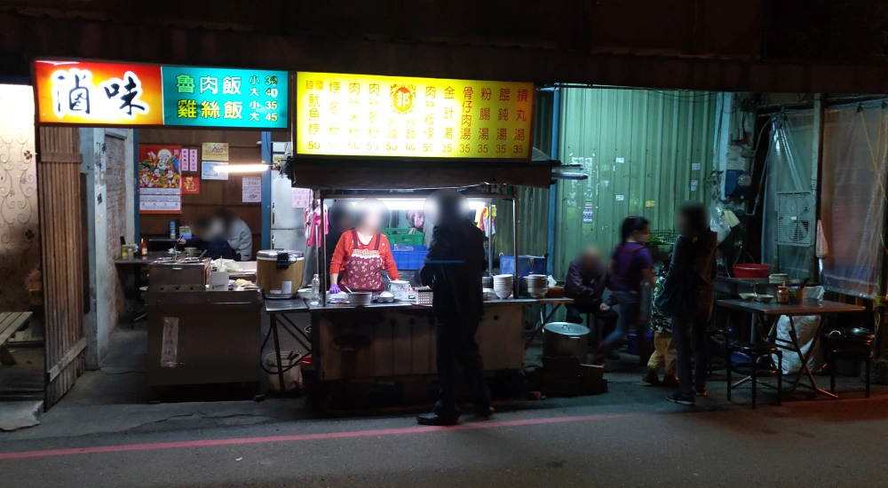
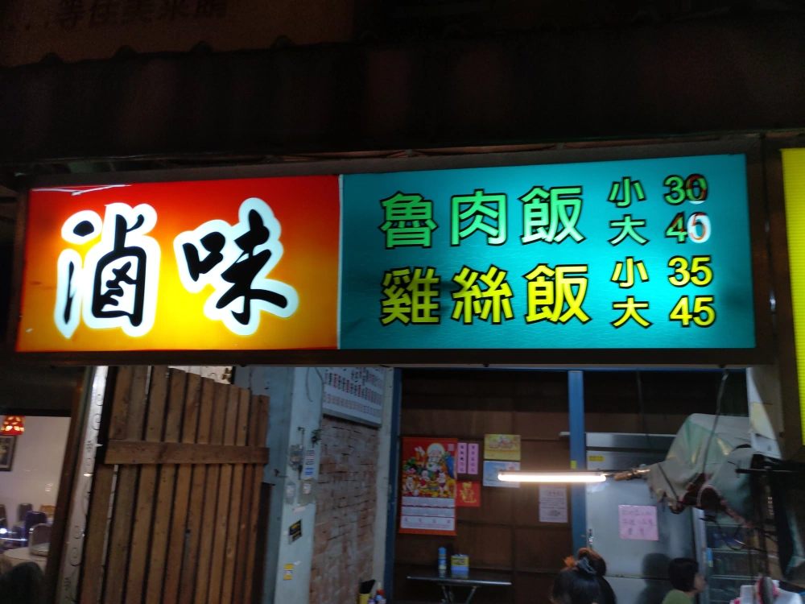
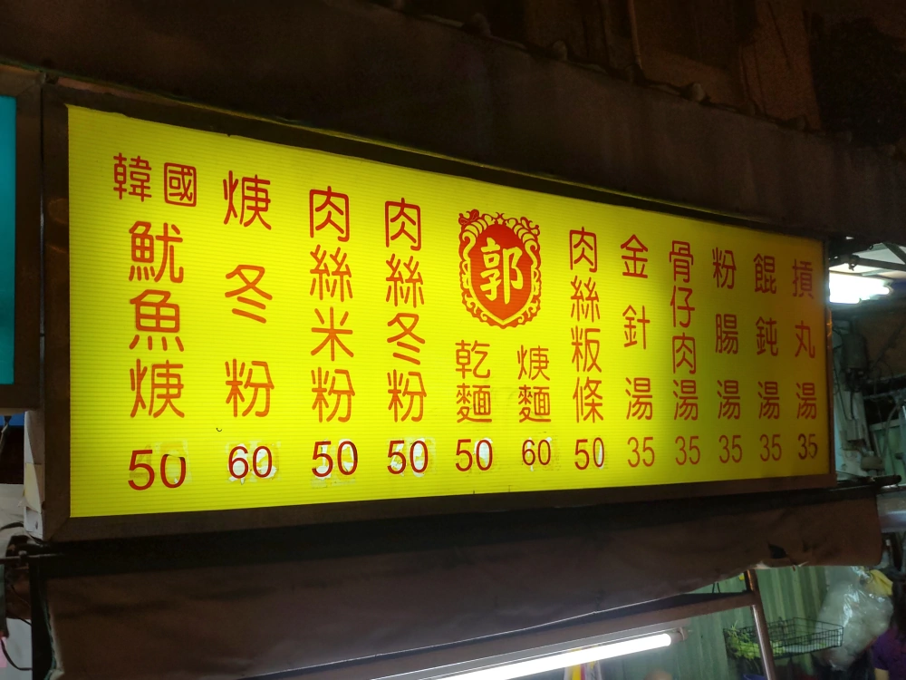
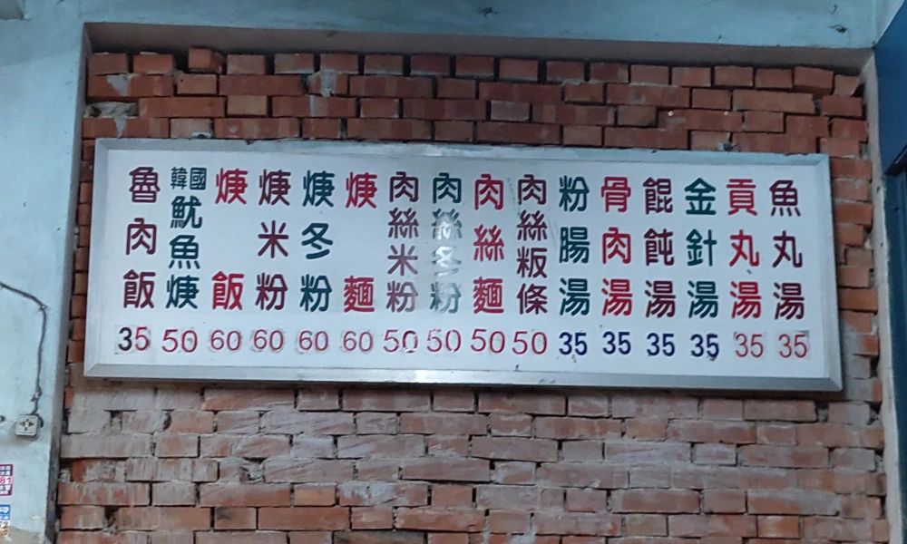
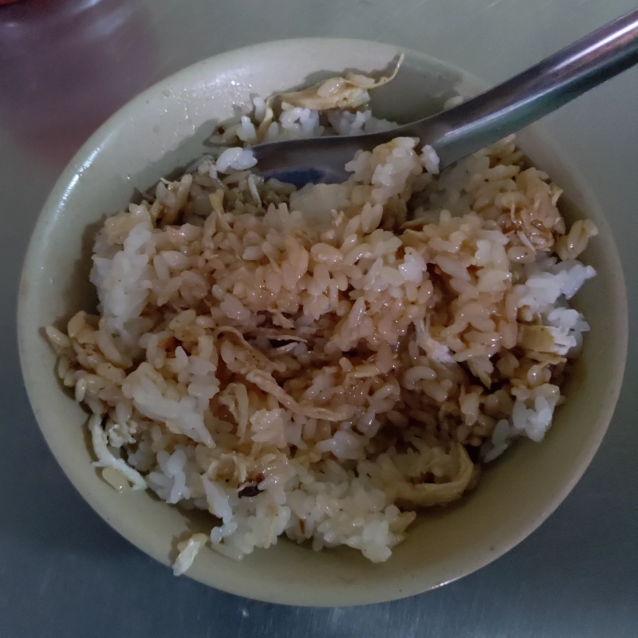
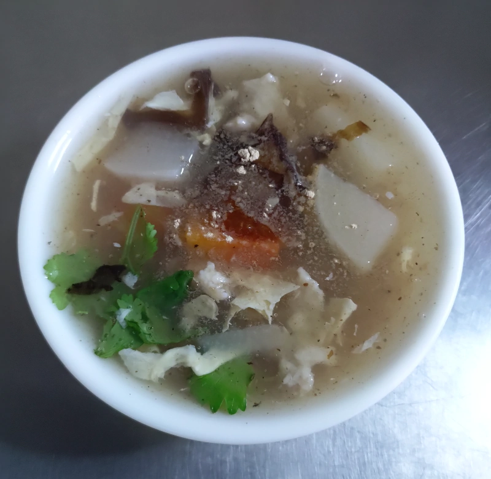
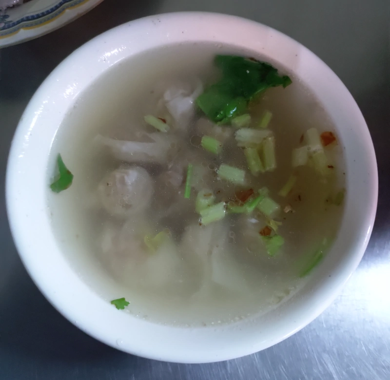
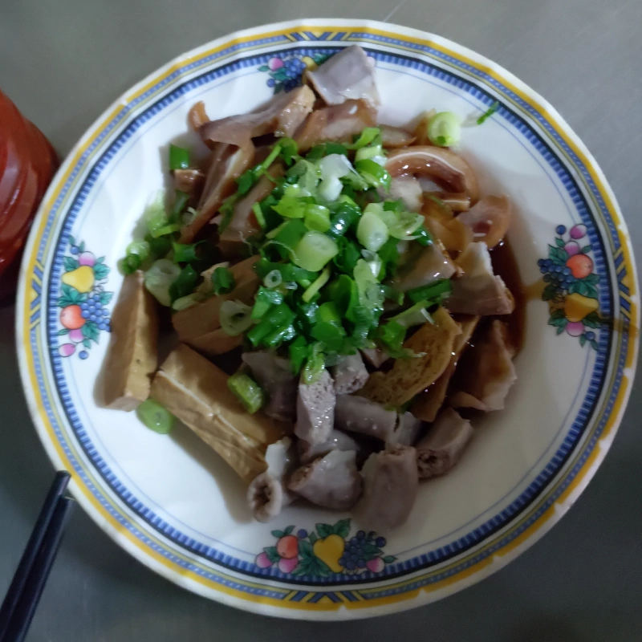
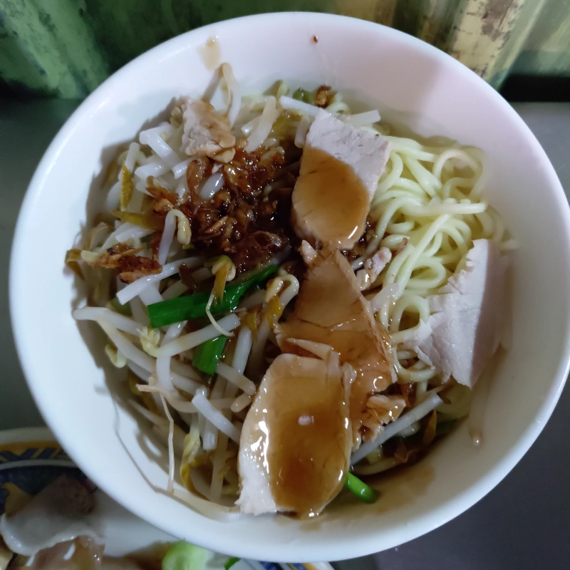

[竹北] 郭家小吃攤
| 餐廳名稱: | 不知正式名稱，姑且稱為 “郭家小吃攤” |
|---|---|
| Google地圖 稱為 “雞絲飯小吃攤” | |
| 地 址: | 新竹縣竹北市中正西路56巷，靠近中正西路 |
| 營業時間: | 據說 週一~週五 17:00~22:00 |
| 週六、日公休 | |
| 電 話: | 無 |
這是一家竹北在地人吃很久的小吃攤，老闆沒上網，沒人報導過，資料非常少。我是從 Facebook 討論區得知這個小吃攤， 它位於中正西路 竹北郵局 與 竹北市公所 中間的56巷 巷口，賣的是 古早味乾麵、滷肉飯、雞絲飯等小吃。 知道的人都誇獎，所以我興沖沖地跑去嚐鮮，一吃成主顧，真是經濟實惠好吃啊。
店門口對面就是舊的竹北市立圖書館的停車場，晚上好停車，稍微遠一點點也有竹北市公所停車場。目前這個位置改建中，竹北市立圖書館已經搬到福德街。也不要跟新竹縣政府文化局搞混喔。
下圖是整個店面的相片，從 Google 地圖反查該位置，發現被前人命名為 “雞絲飯小吃攤”，寫這文章的時候有七個評論， 仍然無住址、電話、營業時間等資訊。 但它門口招牌有個 “郭” 字，好歹應該叫”郭家小吃攤” 吧，本篇文章列的住址、電話、營業時間，則是從討論區中推敲得來的。 所以歡迎網友提供精確資訊。 
這個小吃攤沒有紙本的菜單，全部都在招牌上。第一個招牌只有滷肉飯，雞絲飯。 
第二個招牌就是湯、麵、粄條、冬粉、米粉。神奇的是同時有 餛飩湯、貢丸湯等清湯，也有 韓國魷魚羹 這種勾芡好的湯，一般小吃店通常只賣一種。 
第三個招牌在店內牆上，澱粉類也是 飯、麵、粄條、冬粉、米粉 都有，雞絲飯只列在第一個招牌，這邊沒列，但是確實可以點雞絲飯。 滷味也一樣只列在第一個招牌，要到攤子擺滷味處 現切一些滷味。 
用餐當天是兩個人，狂點一堆，最後吃不完，還用玻璃容器帶一些回家慢慢繼續吃。下圖是 雞絲飯，鹹香好吃。 
韓國魷魚羹，正常好吃的味道。 
餛飩湯，這裡的餛飩是皮薄型的，餡OK，湯OK。 
今天狂點的滷味，大致上每種滷味水準都不錯，腸子、豬頭皮 也是正常好吃。 
這餐最好吃的是這個乾麵，這是古早味的作法，直接用醬油膏、油蔥酥等幾種醬料，淋在麵與豆芽菜上，再加幾片小肉片。 蠻多老店都是這種手法，至於是用那些醬，比例多少，就是各店的商業機密了， 郭家小吃攤的這個拌麵醬，算是調的不錯，濃烈鹹香的滋味。 
根據討論區竹北人的說法，該竹北人宣稱他的一套是滷肉飯與魷魚羹。我覺得滷肉飯沒那麼優，應該是 乾麵與魷魚羹 比較好， 如果不想勾芡，乾麵與餛飩湯 也不錯。其他還有好幾個還沒吃過，準備要來去菜單吃一輪了。